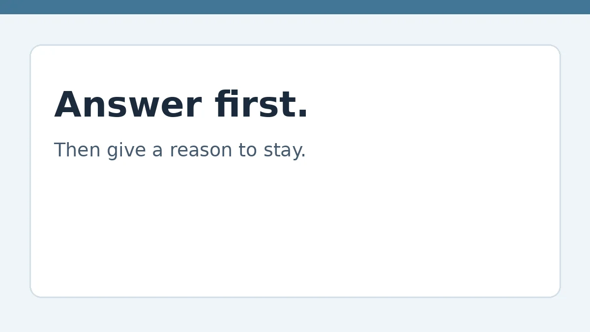

How to Grow a Blog Audience

Sales page — the full guide is not on this page. The information itself is held privately and delivered to buyers only. What follows is what the guide covers and who it is for, so you can decide whether to buy it when checkout is live.
Most readers arrive with one question. If the post answers it plainly at the top, the reader trusts the page — and only then will a hook, a clear structure, and a next step keep them reading. This guide is about growing an audience by being useful first, not by promising a ranking or a traffic number.
Who this is for
Bloggers who want readers to stay, return, and choose to hear from them again — without invented traffic claims.
What's inside
The full guide, held in a private store and delivered to buyers only, covers:
- Answer first, hook second
- Headlines that match the question
- Retention is structure, not length
- An email list readers choose
- Publish, then check — honestly
Price, to decide only. No checkout is live, and no payment is being taken.
How you will get it, when it is live
Buyers will receive the full guide through a private delivery link with a buyer key. That delivery is not live yet — this page is the sales page only, and the full information is not published here.
Related guides
If your readers are learning English, see American pronunciation for Japanese speakers. If you write referral posts, check the terms first with the referral bonus checklist. If you freelance your writing, see how to track work and price a job.